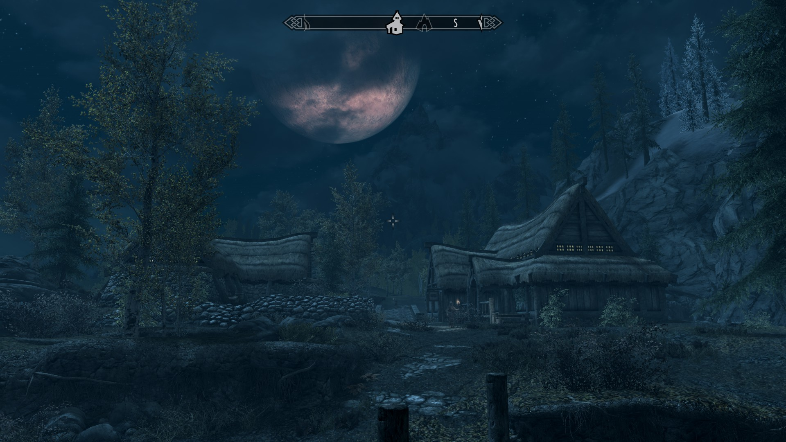
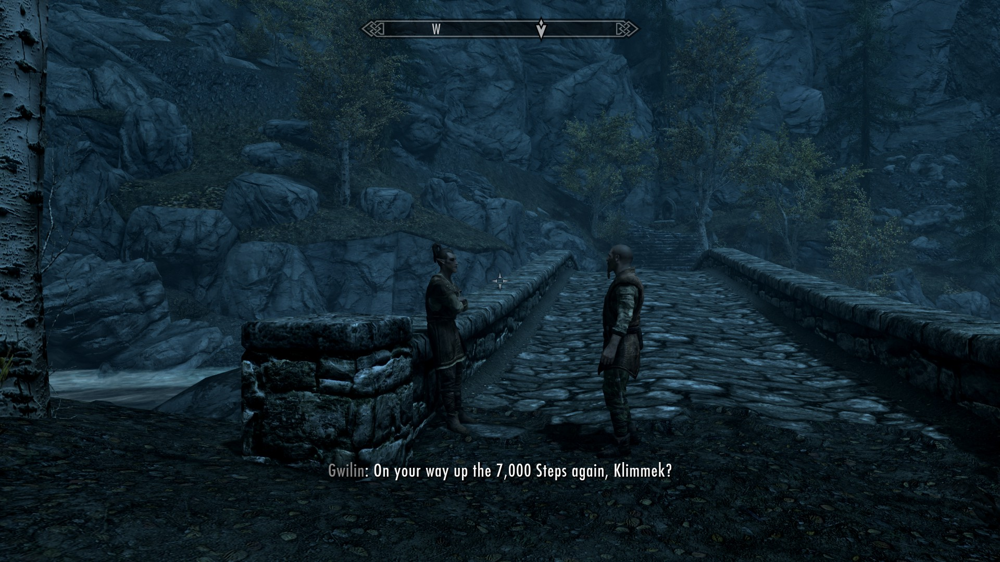
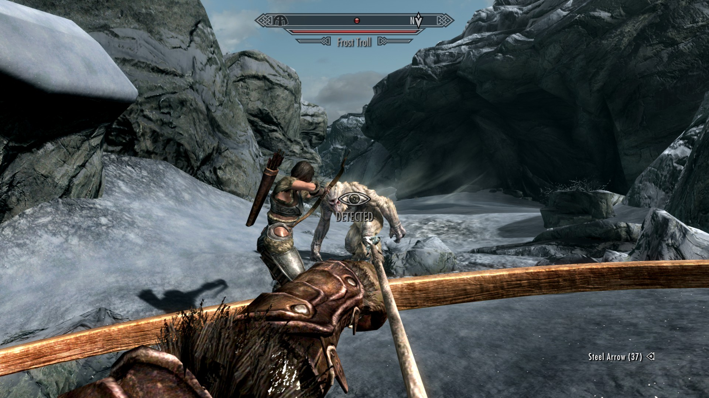
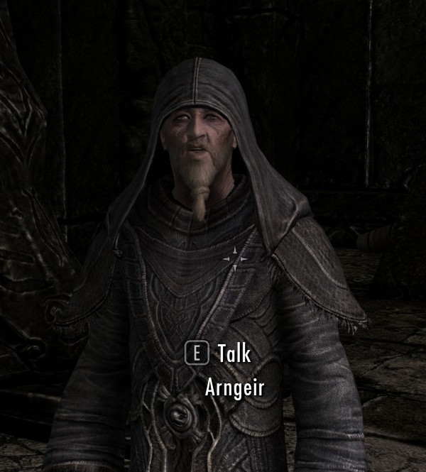
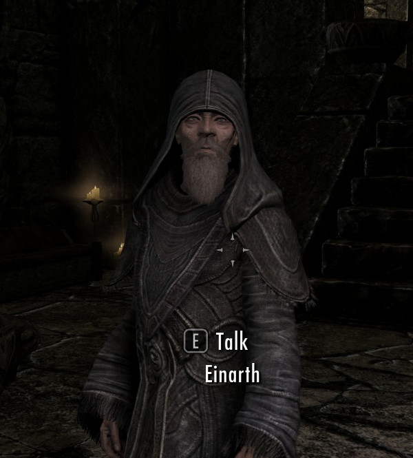
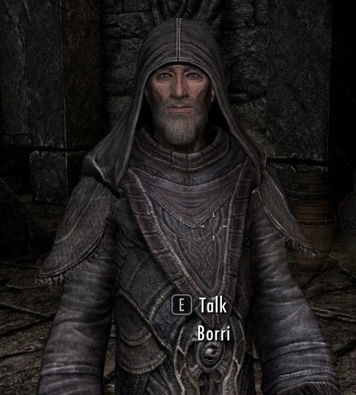
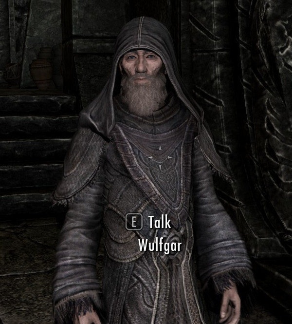

Skyrim-projekti
7000 askelmaa
Kohti Helgeniä ja sen ohi
Juuh elikkäs, tässä kohtaa sun kannattaa fast travellata eli mystisesti pikamatkustaa takaisin Helgeniin. (Oispa oikeassakin elämässä fast travel.) Helgen on hyökkäyksen jäljiltä täynnä rosmoja, mutta älä huoli, jos pikamatkustat sinne, spawnaat kaupungin ulkopuolelle, etkä joudu taistelemaan rosmojen kanssa.
Siitä vaan sit jatkat matkaasi, jos oot fiksu niin seuraat tienviittoja, jotka osoittavat kohti Ivarstead-nimistä kylää ja kuljet tietä pitkin. Jos et oo fiksu, (kuten 99% Skyrimin pelaajista) niin kävelet linnuntietä kohti markkeria, niin pääset seikkailemaan ties missä pöpeliköissä ja luultavasti myös pääset kiipeämään sekä vuorenjyrkännettä ylös, että myös alas. Tätä kutsutaan Skyrim-parkouriksi.

Tietä pitkin kun kuljet ja seuraat tienviittoja, niin lopulta löydät Ivarsteadin. Kylän laidalta lähtee tie, jota pitkin pääset kapuamaan vuoren huipulle. Vuoren juurella tapaat hepun nimeltään Klimmek, joka kertoo, että polun varrella on peräti 7000 askelmaa! Jokuhan on oikeasti laskenut tämän, eikä lukema ole lähelläkään seitsemää tuhatta todellisuudessa. Mutta sinä nappaat Klimmekiltä eväitä, jotka lupaat toimittaa Greybeardseille hänen puolestaan. Siitä saa 750 rahulia, mutta yleensä se palkinnon hakeminen unohtuu, kun into piukeena lähtee tekemään muita tehtäviä.

High Hrothgar
Myönnän, että mun piti googlettaa tän paikan oikea kirjoitusasu, mutta nyt se ehkä on oikein. Vuoren huipulla on semmonen paikka kuin High Hrothgar, ja siellä asuu Greybeardsit. Matkalla huipulle kohtaat joitain ihme tyyppejä, jotka hengailee muuten vaan siellä vuorella, ja sit vastaan tulee myös frost trolli, eli peikkokaveri, joka ei oikeesti oo kaveri, vaan se lyö tosi kovaa. Tässä kohtaa on hyötyä siitä Lydiasta. Voit laittaa sen menemään edeltä, niin, että peikko lyö Lydiaa eikä sua, ja sit voit ite ampua peikkoa nuolilla jostain kaukaa.

Lopulta kun pääset perille, niin muista jättää ne Klimmekin ruokatarvikkeet arkkuun
High Hrothgarin eteen, niin sit voit mukavasti unohtaa hakea sen palkinnon.
Sisällä odottaa neljä parrakasta äijää, eli Greybeardsit. Mietin välillä, että saako
porukasta potkut, jos ajaa parran pois. Mutta palatakseni asiaan, sisällä pääset
todistamaan sun kyvyt näille harmaahapseille, eli sun täytyy huutaa. Se on
niinku lohikäärmekielellä puhumista ja sit voit vaikka huutaa Lydian alas vuorelta.




Harmaahapsit opettaa sulle myös toisen huudon, semmosen ku Whirlwind Sprint, ja se tekee sen, että lennähdät kymmenen metriä eteenpäin sekunnissa. Tätä huutoa ei kannata käyttää kovin lähellä äkillistä pudotusta, koska siinä voi käydä köpelösti. Sitten saatkin tehtävän lähteä noutamaan raunioista semmosta torvea. Tossua toisen eteen siis!